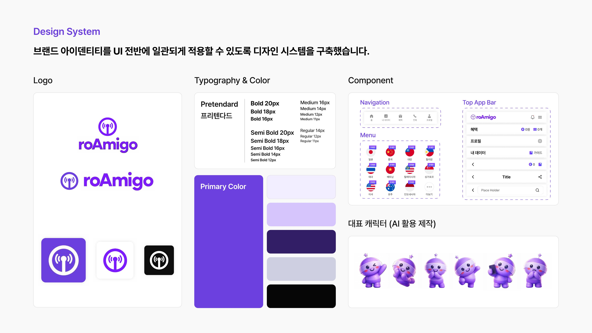
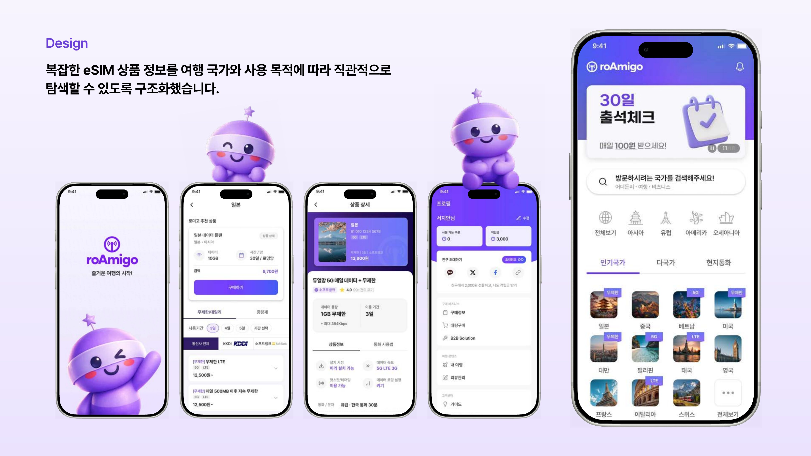

eSIM Purchase Service
roAmigo
국가와 목적별로 복잡하게 나뉜 eSIM 상품을, 탐색부터 구매까지 한 흐름으로 단순화한 여행자 데이터 서비스입니다.
01
Overview
roAmigo는 해외 여행객이 국가 · 통신사 · 데이터 용량별로 흩어진 eSIM 상품을 탐색하고 구매하는 서비스입니다. 기획 단계부터 참여해 정보 구조를 설계하고, 브랜드 캐릭터와 UI 전반을 디자인했습니다.
02
Design System
와이파이 시그널 아이콘을 모티프로 한 퍼플 톤 로고와 AI를 활용해 제작한 대표 캐릭터로 브랜드 톤을 잡았습니다. 국가 선택은 텍스트 목록 대신 국기 아이콘 그리드로 구성해, 여러 국가를 한눈에 비교할 수 있도록 했습니다.

03
Design
인기 국가 탭과 지역별(아시아 · 유럽 · 아메리카 · 오세아니아) 분류로 상품을 좁혀가도록 설계하고, 상품 상세에서는 데이터 용량 · 이용 기간 · 통신사를 한 화면에서 비교할 수 있게 했습니다. 재방문을 유도하기 위해 30일 출석체크와 적립금 · 친구 초대 기능도 함께 설계했습니다.

04
Result
30일 출석체크
리텐션을 위한 출석체크 · 적립금 구조를 설계해 반복 구매를 유도하는 장치를 마련했습니다.